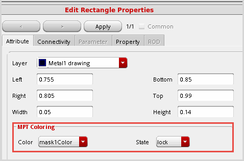
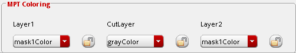
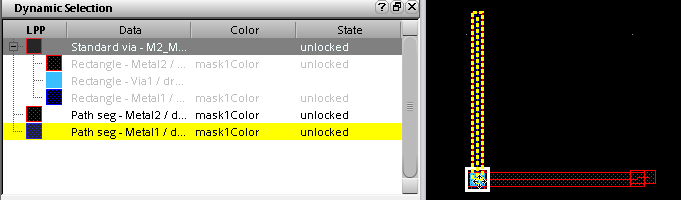

Colored Data Inspection
There are several ways to inspect the color and color state of shapes:
-
The Show Selection Info Toolbar (Window – Toolbars – Show Selection Info) shows the color and color state of preselect and selected objects.
-
The Property Editor (Edit – Basic – Properties [Q]) shows the color and color state of selected objects and vias in the canvas in the MPT Coloring box of the form.

For vias, the color and color state (represented by a locked or unlocked icon) for the metal and cut layers are shown.

-
The Dynamic Selection Assistant (Window – Assistants – Dynamic Selection) shows the color and color state for objects under the cursor in the canvas. This is useful in densely-populated areas of the canvas.

-
SKILL functions
The following SKILL functions query the color and color state of hierarchical (occurrence) shapes:
|
SKILL Function
|
Description
|
|
dbColorShapeQuery2
|
Returns a list of all shapes in a given region with the color, the color state, and whether the color was set by hierarchical color locking.
|
|
dbGetColoredOccShapes
|
Returns a list of colored occurrence shapes with the color, and whether the color is locked for each shape. Only shapes that were colored using hierarchical color locking are included in the list.
|
|
dbGetShapeEffectiveColor
|
Returns the color information for an individual occurrence shape. The color information includes the color, and two Boolean values indicating whether the color is locked and whether the shape was colored by hierarchical color locking.
|
These SKILL functions can query the color for occurrence shapes:
|
SKILL Function
|
Description
|
|
dbColorShapeQuery
|
Returns a list of all the shapes in a given region and their effective colors.
|
|
dbGetShapeColor
|
Returns the assigned color of the specified shape.
|
Related Topics
Interactive Coloring in Layout
Visibility and Selectability of Colored Data
Methods to Change Color of Existing Shapes
Color Locking
Color Shifting
Pre-defined Setup Driven MPT Flows
Using the Multiple Patterning Toolbar
Coloring Methods
Track-Based Coloring
Displaying Track Patterns in Layout
Assign Track Patterns to Nets
Migrate from the Multiple Patterning Assistant
Limitations of Multi-Patterning Technology
Return to top